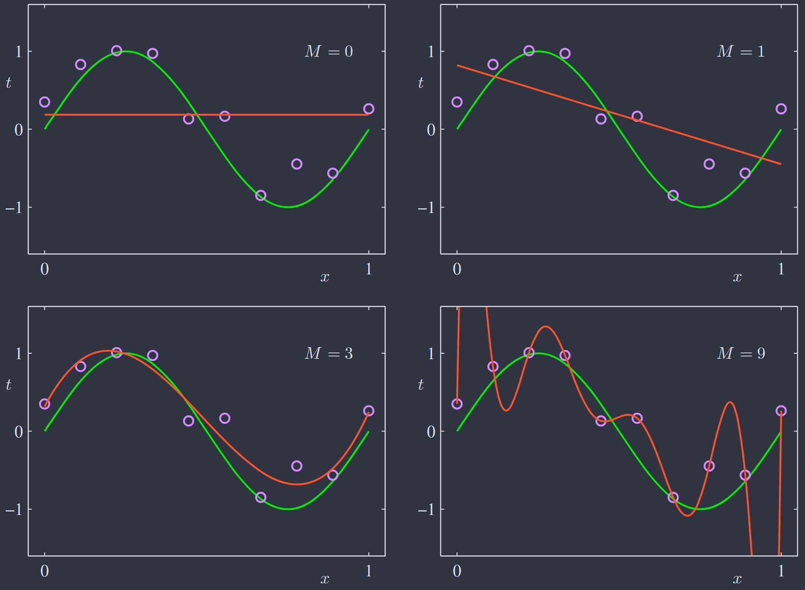
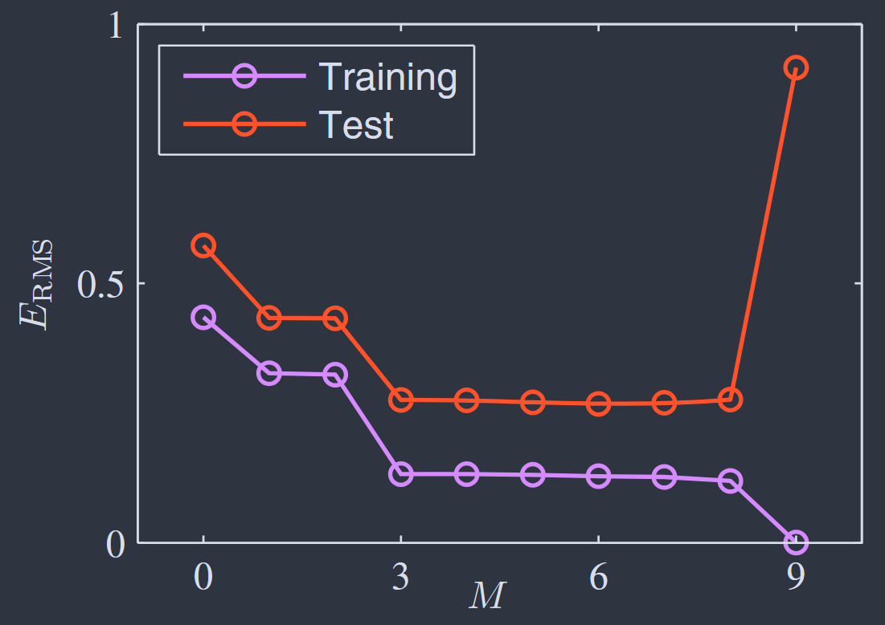
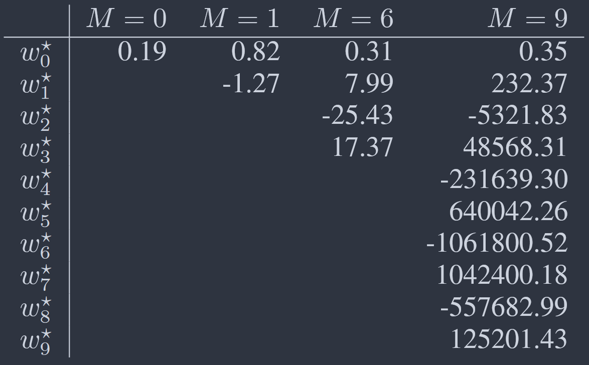
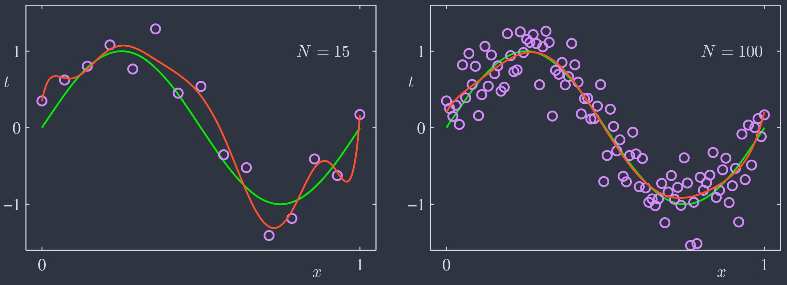
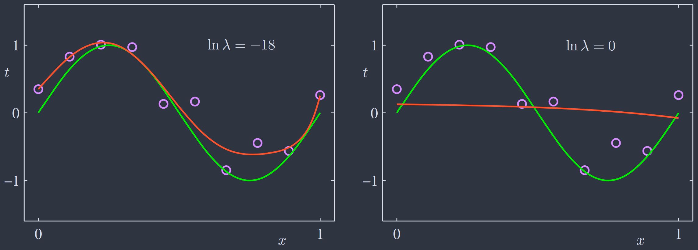
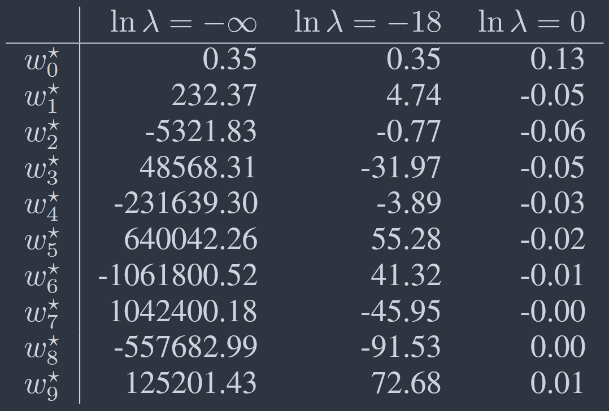
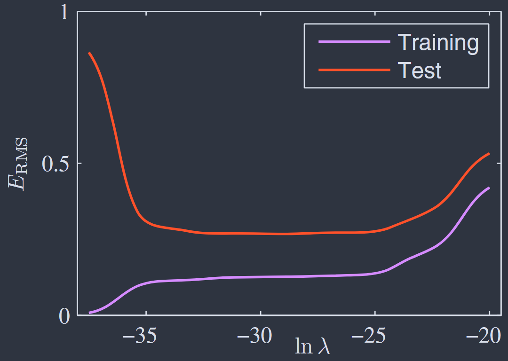
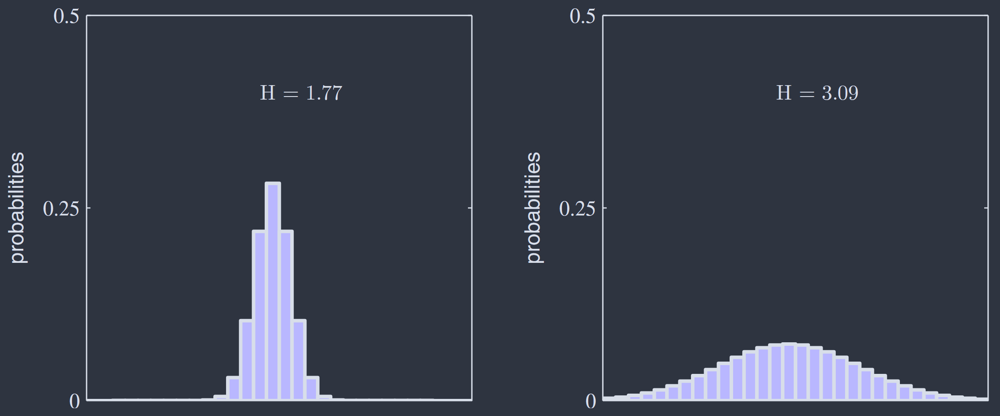

Chapter I Introduction
Although these might sound like daunting topics, they are in fact straightforward, and a clear understanding of them is essential if machine learning techniques are to be used to best effect in practical applications.
1. POLYNOMIAL CURVE FITTING¶
Preliminary¶
假设给定训练集 \(S\) 包含 \(N\) 个观察点 \(\mathbf{X} \equiv (x_1, x_2, \cdots, x_N)^\mathrm{T}\) 以及对应观察值 \(\mathbf{T} \equiv (t_1, t_2, \cdots, t_N)^\mathrm{T}\) ．目标为对新的输入 \(\widehat{x}\) 预测其对应值 \(\widehat{\,t\,}\)．这里我们将其视为简单的曲线拟合问题．特别地，选取如下形式的多项式函数作为拟合目标：
Remark
如上 \(y(x;\mathbf{w})\) 关于 \(x\) 非线性，但是关于参数 \(\mathbf{w}\) 线性，被称为 线性模型（Linear Model）．
Parameter¶
参数 \(\mathbf{w}\) 的值可由最小化 误差函数（Error Function） 的方式确定．误差函数衡量了给定参数 \(\mathbf{w}\) 时预测函数 \(y(x;\mathbf{w})\) 和训练集数据的误差度，如均方误差：
由 \(E(\mathbf{w})\) 关于 \(\mathbf{w}\) 的凸性，其有唯一的极小值点．记 \(\mathbf{w}^* = \operatorname{arg}\min_\mathbf{w} E(\mathbf{w})\)，对应结果多项式为 \(y(x;\mathbf{w}^*)\)．
现在问题转为确定多项式的阶数 \(Ｍ\)．下图为 \(M = 0,1,3,9\) 时拟合结果多项式的对比图像（绿色为原曲线，红色为拟合曲线）．

此外还可以进行一些定量分析．考虑测试集 \(T\)，对于不同 \(M\) 计算在 \(T\) 上的 均方根误差（Root-mean-square，RMS）：
训练集和测试集上的均方根误差随 \(M\) 分布图如下：

可以看到，\(M\) 从 \(0\) 开始增加时，结果多项式拟合效果持续上升．但 \(M = 9\) 时，虽然训练集误差降低到 \(0\)，但测试误差激增，产生 过拟合（Over-fitting） 现象．
Regularization¶
如上的结果似乎存在一些矛盾：
- 低阶多项式可视为高阶多项式的特殊情形，\(M=9\) 的结果应该至少与 \(M=3\) 相当．
- 数据是从 \(\sin(2\pi x)\) 函数中加噪生成的，其 Taylor Expansion 包括所有阶的项，拟合结果应该随 \(M\) 增长而改善．
我们从以下两个视角考察这个问题：
首先是系数 \(\mathbf{w}^*\) 随 \(M\) 的量级变化．

直观来说，具有较大阶数 \(M\) 的复杂多项式越来越适应目标值上的随机噪声．
其次是给定模型（\(M=9\)）对不同量级数据集的拟合效果变化．

数据集越大，就越能容得起对数据拟合一个更复杂的模型．
Remark
一个粗略的经验法则：数据点的数量不应少于模型中自适应参数数量的某个倍数（例如5或10）．
一个经常用来控制过拟合现象的技巧是引入 正则化（Regularization） 项．最简单的方式为添加系数的二阶和：
Remark
值得注意一点，通常会省略正则化项中的系数 \(w_0\)，因为包含该系数会导致结果依赖于目标变量的原点选择．或者，该系数配以独立的正则化系数．
如下图表展示了 \(M=9\) 时，添加不同系数 \(\lambda\) 的正则项后，拟合结果对比图，系数 \(\mathbf{w}\) 量级对比表和 \(E_{\text{RMS}}\) 变化趋势图：



2. PROBABILITY THEORY¶
概率论基本知识可参考 Wiki: Probability Theory，Expectation，Covariance．
Bayesian Probabilities¶
The Rules of Probability
由以上的基本法则，可以推出如下条件概率之间的关系：
Bayes‘s Theorem
若 \(X = \mathcal{D}\) 为观测数据，\(Y=\mathbf{w}\) 为模型参数，则：
- \(p(\mathbf{w})\) 称为 \(\mathbf{w}\) 的 先验概率（Prior Probability），因其是在观测前确定的概率；
- \(p(\mathbf{w} \vert \mathcal{D})\) 称为 \(\mathbf{w}\) 的 后验概率（Posterior Probability），因其是在观测数据后得到的概率；
- \(p(\mathcal{D}\vert \mathbf{w})\) 称为关于 \(\mathbf{w}\) 的 似然函数（Likelihood Function），代表了对于不同参数向量 \(\mathbf{w}\) 观测数据出现的可能性．
此时，Bayes' Theorem 可重新表述为：
Remark
注意似然不是一个关于 \(\mathbf{w}\) 的概率分布，因而只称为函数，其关于 \(\mathbf{w}\) 的积分结果不一定为 \(1\)．如上正比关系也是关于 \(\mathbf{w}\) 而言．
在频率学派和贝叶斯学派中，似然 \(p(\mathcal{D}\vert \mathbf{w})\) 都扮演着重要的角色，但具体使用方式截然不同：
- 在频率学派中，\(\mathbf{w}\) 被视为由某种估计器（如最大似然估计）确定的固定参数，并且误差棒由可能的数据集 \(\mathcal{D}\) 的分布决定；
- 在贝叶斯学派中，只有唯一的数据集 \(\mathcal{D}\) （即观测到的那一个），并且参数 \(\mathbf{w}\) 的不确定性由其分布 \(p(\mathbf{w})\) 表示．
Gaussian Distribution¶
Gaussian Distribution
一维高斯分布：
其中 \(\mu\) 为均值，\(\sigma\) 为标准差，\(\beta=1/ \sigma^2\) 为精度．计算有：
\(D\) 维高斯分布：
其中 \(\mathbf{\mu}\) 为均值，\(\mathbf{\Sigma}\) 为协方差
Curve Fitting Re-visited¶
重新考虑 第一节 中的曲线拟合问题．使用概率分布表达目标变量的不确定性，即对于输入 \(x\)，假设其对应值 \(t \sim \mathcal{N}(y(x,\mathbf{w}),\beta^{-1})\) ：
现在使用训练集 \(S=(\mathbf{X},\mathbf{T})\) 来决定参数 \(\mathbf{w}, \beta\)．
-
频率学派 最大似然（Maximum Likelihood，ML） 估计．
似然函数计算如下：
\[ \begin{align} p(\mathbf{T}\vert \mathbf{X},\mathbf{w},\beta) &= \prod_{n=1}^N p(t_n\vert x_n, \mathbf{w},\beta) = \prod_{n=1}^N \mathcal{N}(t_n\vert y(x_n,\mathbf{w}),\beta) \\ -\ln p(\mathbf{T}\vert \mathbf{X},\mathbf{w},\beta) &= \frac{\beta}{2}\sum_{n=1}^N [y(x_n,\mathbf{w})-t_n]^2 - \frac N2 \ln\beta + \frac N2\ln(2\pi) \end{align} \]最大化似然可得：
\[ \begin{align} \mathbf{w}_{\rm{ML}} &= \arg \min_{\mathbf{w}}\, \frac12[y(x_n,\mathbf{w})-t_n]^2 \\ \beta_{\mathrm{ML}}^{-1} &= \frac1N \sum_{n=1}^N [y(x_n,\mathbf{w_{\mathrm{ML}}})-t_n]^2 \end{align} \]即第一节中均方误差的形式实际为最大似然的结果．
-
贝叶斯思想 最大后验（Maximum Posterior，MAP） 估计．
引入参数 \(\mathbf{w}\) 的先验分布：
\[ p(\mathbf{w}\vert \alpha) = \mathcal{N}(\mathbf{w}\vert \mathbf{0},\alpha^{-1}\mathbf{I}) = \left(\frac{\alpha}{2\pi}\right)^{(M+1)/2} \exp\left\{ -\frac{\alpha}2 \mathbf{w}^{\mathrm{T}}\mathbf{w} \right\} \]由贝叶斯公式计算后验有：
\[ \begin{align} p(\mathbf{w}\vert \mathbf{X},\mathbf{T},\alpha,\beta) &\propto p(\mathbf{T}\vert \mathbf{X},\mathbf{w},\beta) p(\mathbf{w}\vert \alpha) \\ -\ln p(\mathbf{w}\vert \mathbf{X},\mathbf{T},\alpha,\beta) = \frac{\beta}{2}\sum_{n=1}^N [y(x_n,&\mathbf{w})-t_n]^2 + \frac{\alpha}2 \mathbf{w}^{\mathrm{T}}\mathbf{w}- \frac N2 \ln\beta + \text{Const} \end{align} \]最大化后验可得：
\[ \begin{align} \mathbf{w}_{\rm{MAP}} &= \arg \min_{\mathbf{w}}\, \frac\beta2[y(x_n,\mathbf{w})-t_n]^2 + \frac\alpha2 \mathbf{w}^{\mathrm{T}}\mathbf{w} \\ \beta_{\mathrm{MAP}}^{-1} &= \frac1N \sum_{n=1}^N [y(x_n,\mathbf{w_{\mathrm{MAP}}})-t_n]^2 \end{align} \]即第一节中加入正则项的均方误差的形式实际为最大后验的结果，其中 \(\lambda=\alpha/\beta\)．
-
完全贝叶斯方法
如上方法仍停留在对 \(\mathbf{w}\) 作点估计，下面处理中会对 \(\mathbf{w}\) 取值作积分．这里假设参数 \(\alpha,\beta\) 值已知，考虑 \(p(t\vert x,\mathbf{X},\mathbf{T})\)，计算有：
\[ p(t\vert x,\mathbf{X},\mathbf{T}) = \int p(t\vert x,\mathbf{w}) p(\mathbf{w}\vert \mathbf{X},\mathbf{T})\, \mathrm{d}\mathbf{w} = \mathcal{N}(t\vert m(x),s^{2}(x)) \]均值和方差由如下式子给出：
\[ \begin{align} m(x) &= \beta \mathbf{\phi}(x)^\mathrm{T}\mathbf{S}\sum_{n=1}^N \mathbf{\phi}(x_{n})t_{n}\\ s^{2}(x) &= \beta^{-1} + \mathbf{\phi}(x)^\mathrm{T}\mathbf{S}\mathbf{\phi}(x) \\ \\ \mathbf{S}^{-1} = \alpha \mathbf{I} + &\beta \sum_{n=1}^N \mathbf{\phi}(x_{n})\mathbf{\phi}(x)^\mathrm{T}, \quad \mathbf{\phi}_{i}(x) = x^i \end{align} \]可以看到：
- 均值和方差都是依赖于 \(x\) 的；
- 方差第一项 \(\beta^{-1}\) 表示由目标变量上的噪声引起的预测值 \(t\) 的不确定性，类似 \(\beta_{\text{ML}}^{-1}\)．第二项源于 \(\mathbf{w}\) 的不确定性，是贝叶斯处理的结果．
3. DECISION THEORY¶
概率论提供了数学框架，量化和处理不确定性．决策理论将会基于此给出不同情况下的最优决策．
以分类任务为例，假设 \(\mathbf{x}\) 为输入向量，\(t\) 为输出向量，其可分类为 \(\mathcal{C}_{k}\)．
- 推断（Inference） 任务包括决定 \(p(\mathbf{x},\mathcal{C_{k}})\)；
- 决策（Decision） 任务包括在某种最优情况下根据 \(\mathbf{x}\) 决定 \(t\) 的类别 \(\mathcal{C}_{k}\)．
Minimizing Misclassification Rate¶
将输入空间分为 决策域（Decision Regions） \(\mathcal{R}_{k}\) ，认为 \(\mathcal{R}_{k}\) 中的点对应于类别 \(\mathcal{C}_{k}\)．从而最小化如下误分类率：
多类别情况下可最大化如下正确率：
其中对于每一个 \(\mathbf{x}\)，\(p(\mathbf{x})\) 固定，只需将其归类为拥有最大后验 \(p(\mathcal{C}_{k}\vert \mathbf{x})\) 的类别 \(\mathcal{C}_{k}\)．
Minimizing Expected Loss¶
实际情况中，每种误分类所带来的损失不一样．记 \(L_{k,j}\) 为将类别 \(\mathcal{C}_{k}\) 的点误分类为 \(\mathcal{C}_{j}\) 的损失，最小化如下的损失函数：
同样，将每个 \(\mathbf{x}\) 归类为拥有最小 \(\sum_{k}L_{k,j}p(\mathcal{C}_{k}\vert x)\) 的类别 \(\mathcal{C}_{j}\)．
Reject Option¶
设定阈值 \(\theta\)，对于最大后验 \(\max_{k} p(\mathcal{C}_{k}\vert \mathbf{x})\leq \theta\) 的输入 \(\mathbf{x}\) 进行人工检测．
Inference & Decision¶
实际中有如下的三种策略：
-
建模 \(p(\mathbf{x}\vert \mathcal{C}_{k})\) 和 \(p(\mathcal{C}_{k})\) 或等价地建模 \(p(\mathbf{x},\mathcal{C}_{k})\) ，由贝叶斯定理得到后验 \(p(\mathcal{C}_{k}\vert \mathbf{x})\) ，再进行决策．
Remark
如上显示或隐式建模了输入分布 \(p(\mathbf{x})\) 的模型称为 生成模型（Generative Model）．因可以采样生成合成数据点．可用于异常检测等任务．
-
建模后验 \(p(\mathcal{C}_{k}\vert \mathbf{x})\) ，再进行决策．
Remark
如上显示建模后验的模型称为 判别模型（Discriminative Model）．
-
建模判别函数 \(f(\cdot)\)，直接将输入 \(\mathbf{x}\) 映射到类别标签 \(\mathcal{C}_{k}\)．
Remark
显示或隐式建模后验 \(p(\mathcal{C}_{k}\vert \mathbf{x})\) 有诸多好处，其一用处如下： 对于存在稀有样本的情况，训练集的构造需要平衡正常样本和稀有样本的比例．这会影响样本的先验，从而得到错误的后验．根据贝叶斯定理，后验正比于先验．因此可以将训练集得到的后验除以训练集先验再乘上实际先验，最后归一化得到正确后验．直接建模判别函数无法实现这一点．
4. INFORMATION THEORY¶
Introduction¶
对于离散随机变量 \(x \sim p\)，定义 \(h(\cdot)\) 为关于 \(p\) 的单调函数，表示信息量．那么当 \(x\) 和 \(y\) 独立时，有：
可得：
Remark
对数的底数选择是任意的．目前采用信息论中常用的以 \(2\) 为底，此时其单位为 “比特（bits）”；后面采用以 \(e\) 为底，此时其单位为 “奈特（nats）”．
其包含的平均信息量称为 熵（Entropy），计算如下：
直观来说，分布平均的随机变量熵值大，分布集中在某些点的随机变量熵值小．

下面将熵的概念推广到连续性随机变量 \(x \sim p \in C[x]\) ：
将实轴等距分割，每一段距离为 \(\Delta\) ，\(x\) 在 \([i\Delta,(i+1)\Delta]\) 中的概率为：
将其视为离散分布，对应熵为：
忽略第二项 \(\ln\Delta\) ，令 \(\Delta\to 0\)，则有：
称之为 微分熵（Differential Entropy） ．
Remark
注意到微分熵和离散熵之间相差 \(\ln\Delta\) ，这反映了精确指定一个连续变量需要大量比特．
由 Lagrange 乘数法 计算知，离散分布情况下，最大熵对应于均匀分布．下面推导连续分布情况下的最大熵分布：
为保证最大值的良定性，对 \(p(x)\) 做如下约束：
由 Lagrange 乘数法计算有：
即连续分布情况下的最大熵对应于高斯分布，此时微分熵为：
Remark
由上式 \(\mathrm{H}[x]\) 表达式也可以看出，分布越分散熵值越大．并且微分熵可以为负值，当 \(\sigma^{2} < 1/(2\pi e)\) 时有 \(\mathrm{H}[x] < 0\) ．
假设现在有联合分布 \(p(x,y)\) ．若 \(x\) 的值已知，则确定某一 \(y\) 值所需的额外信息为 \(-\ln p(y\vert x)\) ，从而确定 \(y\) 所需的平均信息量为：
称之为给定 \(x\) 下 \(y\) 的 条件熵（Conditional Entropy）．由乘法法则，计算有：
Relative Entropy & Mutual Information¶
假设有未知分布 \(p(x)\)，建模得到近似分布 \(q(x)\)，则以 \(q(x)\) 传递 \(x\) 值所需的平均额外信息量为：
称之为 相对熵（Relative Entropy） 或 KL 散度（Kullback-Leibler Divergence）．
Properties
KL 散度有如下两个重要性质：
-
非对称性
\[ \text{KL}(p\Vert q) \not\equiv \text{KL}(q\Vert q) \] -
非负性
利用 Jensen 不等式：对于凸函数 \(f\)，
\[ f(\mathbb{E}[x]) \leq \mathbb{E}[f(x)] \]取 \(f(x) = -\ln x\)，
\[ \text{KL}(p\Vert q) = -\int p(x)\ln \left[ \frac{q(x)}{p(x)} \right] \, \mathrm{d}x \geq -\ln \int q(x)\, \mathrm{d}x = 0 \]因此，可以视 KL 散度为两个分布 \(p(x)\) 和 \(q(x)\) 之间不相似性的度量．
若两个分布 \(p,q\) 独立，则有 \(p(x,y) = p(x)p(y)\) ．而当 \(p,q\) 不独立时，可使用 KL 散度衡量两个分布之间的“独立度”：
称之为 \(x\) 和 \(y\) 之间的 互信息（Mutual Information）．
此外，有如下关系式：
即互信息为在观测 \(y\) 后 \(x\) 信息的减少量．